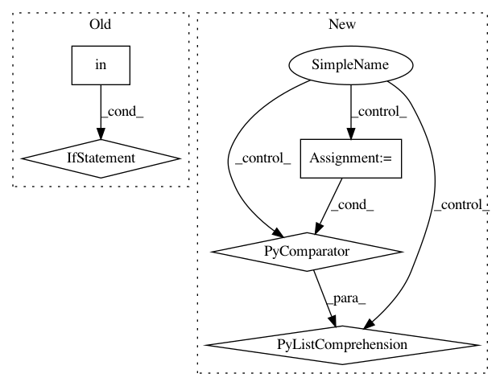

d1e6e624ef891543c5bba32bb0a696d350714693,coremltools/models/utils.py,,_convert_nn_spec_to_half_precision,#Any#,172
Before Change
"be converted manually".format(layer.name))
continue
elif layer_type in quantized_layers:
raise Exception("Half precision for " + layer_type +
" not yet implemented\n")
else:
After Change
continue
if layer_type not in quantized_layers:
params = getattr(layer, layer_type, None)
params = params.ListFields() if params else []
param_types = [p[0].message_type.name if p[0].message_type else None for p in params]
if "WeightParams" in param_types:
raise NotImplementedError("Quantization for layer "" + layer_type + "" not implemented.")
continue // print("Skipping layer {}. No need to quantize.".format(layer.name))
In pattern: SUPERPATTERN
Frequency: 3
Non-data size: 5
Instances
Project Name: apple/coremltools
Commit Name: d1e6e624ef891543c5bba32bb0a696d350714693
Time: 2019-08-20
Author: smq@apple.com
File Name: coremltools/models/utils.py
Class Name:
Method Name: _convert_nn_spec_to_half_precision
Project Name: apple/coremltools
Commit Name: 6579941f769413ed00f5330ad45c3c5f44c52927
Time: 2019-09-16
Author: awadhwa@apple.com
File Name: coremltools/converters/nnssa/coreml/graph_pass/op_fusions.py
Class Name:
Method Name: _is_NHWC
Project Name: CyberZHG/keras-bert
Commit Name: 4c9862095f70f77da083ec909ce5d3211686674f
Time: 2019-06-10
Author: CyberZHG@gmail.com
File Name: keras_bert/backend.py
Class Name:
Method Name: